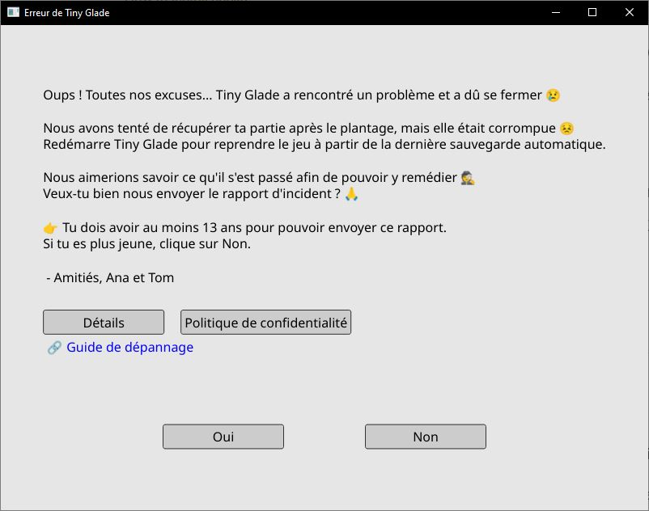
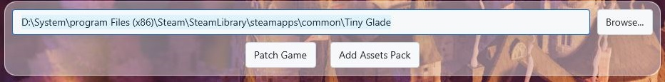

How to edit game Assets
Tiny Glade includes many assets and Compiled assets (Aka Textures) that you can modify to change the look and feel of your game.
Asset packs are collections of these modified files gather in an zip file, letting you customize things like:
- Decorations and clutter
- Entities (sheep, ducks, etc.)
- Trees
- Seasonal settings
- Banners
Asset packs replace existing game files and are loaded when the game starts.
Installation Methods
There are two ways to install custom assets:
- Manual installation
- Automatic installation (using Whiterun)
Manual Installation
- Extract the new asset pack (usually a ZIP file).
- Copy the new
assetsfolder into your game directory, replacing existing files if prompted. - Start the game and enjoy your new content!
Danger
Modding is fun but risky!
- Always back up your saves before experimenting.
- If the game asks to send a crash report, say no to avoid annoying the dev teams (but you can share logs on Discord’s #modding channel, click on details, open log.txt and scroll to the bottom).

- The manifest is reset after every game update, so check it regularly!
Automatic Installation
 You can use the Whiterun tool to automate the process:
You can use the Whiterun tool to automate the process:
- Download Whiterun from GitHub
(Requires Java 24 to run) - Open Whiterun by double-clicking on the
jarfile (make sure you launch it with the right version of java) - Patch your game
The game should be automaticly located and the path is shown in the text field. verify the path or edit it with the Browse... button
The path should lead to something like :
C:\program Files (x86)\Steam\SteamLibrary\steamapps\common\Tiny Glade\ Then click on the Patch Game button to patch the game - Click "Add asset pack" to open the folder where asset packs are stored. You can download packs from the Reddit community or the Discord #Mods-list channel.
- The pack should appear in Whiterun automatically.
Click on it, then click "Install".

- Start the game and enjoy!
Creating a New Asset Pack
To create your own asset pack, follow these steps:
- Set up your pack folder
- Create an empty directory for your pack.
-
Inside this folder, replicate the structure of the original game files for any assets you want to modify.
- Example: To edit the anvil clutter, place your modified file at
assets/meshes/clutter/anvil.json. - For compiled assets: To change the flag texture, place your file at
compiled-assets/textures/flag_patterns.texture.
- Example: To edit the anvil clutter, place your modified file at
-
Add a manifest file
- At the root of your pack folder, create a file named
manifest.jsonto describe your pack. - Example manifest:
-
This file is required for your pack to be recognized by the game or Whiterun.
-
Include a thumbnail
- Add a 128x128 JPG image named
thumbnail.jpgat the root of your pack folder. -
This image will represent your pack in mod managers.
-
Package your pack
- Zip the entire folder (including all files, manifest, and thumbnail).
- Your asset pack is now ready to share or install!
Tip:
If you want to skip creating the manifest and zipping manually, you can use the Whiterun tool’s built-in pack creation form for a streamlined process.
Recovering from Problems
If you want to restore the default game or if something breaks.
1. go one the Tiny Glade steam page in your library
2. click on the cog at the right and in the dropdown menu click on properties

3. On the pop-up go to "installed files" menu and click on "verify integrity"

Need Help?
- Join the Tiny Glade Discord (accessible inside the game) for help and sharing mods.
- You can find mods in the Reddit community.
Happy tinkering!